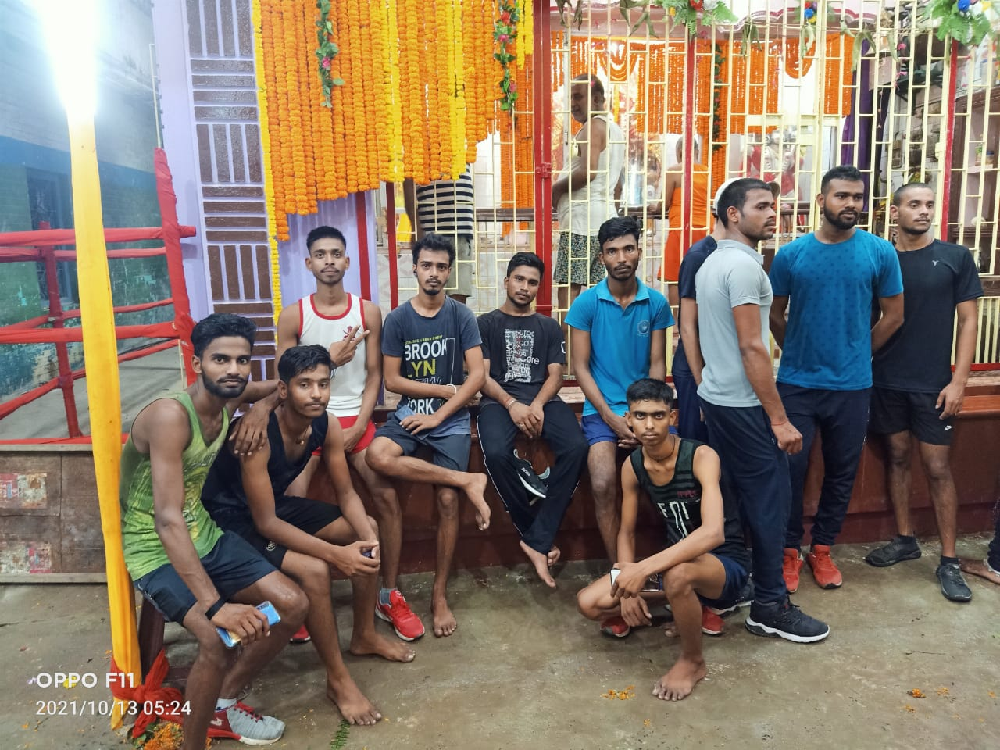

Full Stack Developer,Public Speaker and HTML & CSS love to developing responsive and creative websites and passionate about challenges, living in Hajipur, Bihar, India. I am working at Amarjeet Study Point as a Full Stack Developer, Public Speaker and SEO HTML & CSS. I have three month of experiences in creating responsive and creative websites from Amarjeet Study Point. We, the Amarjeet Study Point Team are on a mission to transform Bihar as an IT Hub by transforming their lives, by transforming thinking methodology of IT students of Bihar through innovative learning and realtime technologies accessible to youngsters, and we have faith that one day Bihar will known for IT Hub. I believe in quality not quantity. I take every work as a challenge. Because challenge is the way of success. I believe in TRANSFORMING LIVES DIGITALLY. My vision is to work hard to satisfy the client. I have over three month of experience in web development and website design. I am hard worker and straight forward. I work hard until client become 100% satisfy. I always try to solve any problem that comes across. Most important things about me, I am an honest, with higher thinking and positive attitude, believe in myself and I have patience.
My Images


Bihar Ka Images
Our Mission
Full Stack Developer,Public Speaker and HTML & CSS love to developing responsive and creative websites and passionate about challenges, living in Hajipur, Bihar, India. I am working at Amarjeet Study Point as a Full Stack Developer, Public Speaker and SEO HTML & CSS. I have three month of experiences in creating responsive and creative websites from Amarjeet Study Point.
We, the Amarjeet Study Point Team are on a mission to transform Bihar as an IT Hub by transforming their lives, by transforming thinking methodology of IT students of Bihar through innovative learning and realtime technologies accessible to youngsters, and we have faith that one day Bihar will known for IT Hub.
I believe in quality not quantity.
Our Vision
Full Stack Developer,Public Speaker and HTML & CSS love to developing responsive and creative websites and passionate about challenges, living in Hajipur, Bihar, India. I am working at Amarjeet Study Point as a Full Stack Developer, Public Speaker and SEO HTML & CSS. I have three month of experiences in creating responsive and creative websites from Amarjeet Study Point.
We, the Amarjeet Study Point Team are on a mission to transform Bihar as an IT Hub by transforming their lives, by transforming thinking methodology of IT students of Bihar through innovative learning and realtime technologies accessible to youngsters, and we have faith that one day Bihar will known for IT Hub.
I believe in quality not quantity.
Why Choose
Full Stack Developer,Public Speaker and HTML & CSS love to developing responsive and creative websites and passionate about challenges, living in Hajipur, Bihar, India. I am working at Amarjeet Study Point as a Full Stack Developer, Public Speaker and SEO HTML & CSS. I have three month of experiences in creating responsive and creative websites from Amarjeet Study Point.
We, the Amarjeet Study Point Team are on a mission to transform Bihar as an IT Hub by transforming their lives, by transforming thinking methodology of IT students of Bihar through innovative learning and realtime technologies accessible to youngsters, and we have faith that one day Bihar will known for IT Hub.
I believe in quality not quantity.
Team Image
